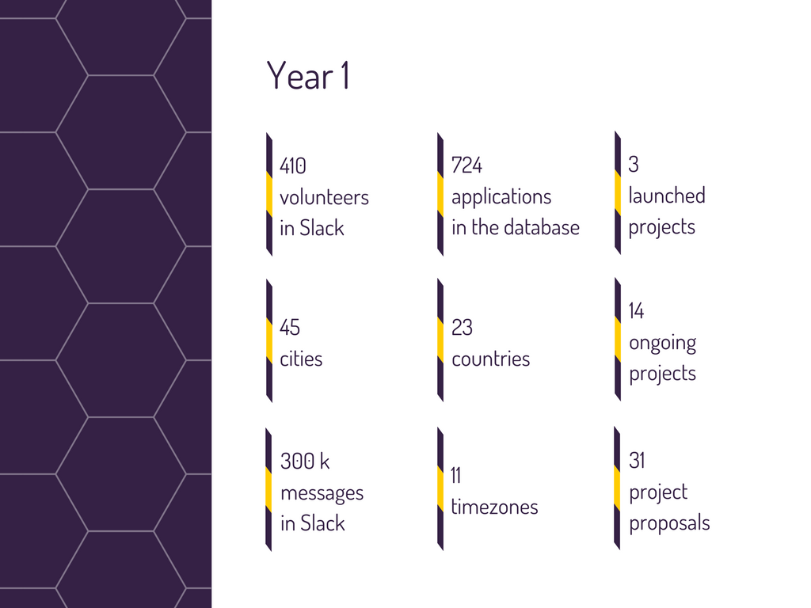

Yetibot
Doing awesome chatops in Clojure
(or) How this NGO's Fourth Hardest Worker Isn’t Human
by
Victor Cleja
@cvic
21:12 <uberbot> : !psearch - PacketStorm file search
21:12 <uberbot> : !sans - SANS ISC SecNews Feed
21:12 <uberbot> : !seen - Last seen nick
21:12 <uberbot> : !sf - SecurityFocus.com Vuln Feed
21:12 <uberbot> : !tld - TLD expand
21:12 <uberbot> : !uptime - Uptime of uberbot
21:12 <uberbot> : !whois - Query whois records for dns/ip
21:12 <uberbot> : !wiki - Search Wikipedia.org
21:12 <uberbot> : !yahoo - Search Yahoo Answers
21:12 <uberbot> : !youtube - Search Youtube
21:12 <uberbot> +- end of commands.
--- Log closed Mon May 11 21:14:59 2009
code4romania_22_05_2017.pdf
What do we use?

But...
W.T.F. is Chatops
Yetibot @ eBay
- Initial use cases were around memes and image lookups :-)
- Parse .pom files to show project versions and its dependencies so we could make sure we had the right dependencies deployed
- Config validation: an observer would poll S3 for a config file, validate it and report any errors
- Track Github statistics over time: total repository count, additions, deletions, changes
- JIRA integration: opening and commenting on issues, list what people are working on, search for a specific issue
- Use yetibot-stackstorm to control the Ansible automation for 2 clusters of 100 machines each
- Host a Github webhook to run Codeclimate on pull requests and report back if there were any issues
Yetibot excels at
- teaching: how to run internal automation, language evaluation for JS, Scala, Clojure, and Haskell
- productivity: automating things around Jenkins, JIRA, running SSH commands on various servers, and interacting with internal APIs via private Yetibot plugins
- fun: Google image search, gif lookups, meme generation
DEMO►
Q&A
External links
- What is ChatOps? A guide to its evolution, adoption, and significance
- The Four Stages of ChatOps
- ChatOps - Managing Operations in Group Chat
- Here is how Cog measures up to Hubot and Lita
- 8 Reasons Why ChatOps Isn't Working At Your Company
- A social coding experiment that updates its own code democratically